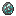

Гончарное дело
Глина — крайне полезный и универсальный материал, который используется в гончарном деле. Глину может быть сложно найти, так как она обычно скрыта травой. Наиболее часто глина встречается в районах с осадками более 175 мм. Определить её залежи можно по растущим на поверхности растениям-индикаторам.
Растения-индикаторы
Структура
Глина, рядом с одним из растений, которые указывают на её присутствие.
Цветущий папоротник, лилия-канна, золотарник, пампасная трава, шалфей и водная лилия-канна указывают на наличие глины поблизости. Глину также можно найти в небольших залежах рядом с источниками воды, такими как реки, озёра и пруды.
Глину можно использовать для лепки, чтобы вылепить новые предметы. Для этого требуется пять комков глины в руке. В отличие от камней, если вы сделаете ошибку, можете просто закрыть интерфейс лепки и попробовать снова.
Интерфейс лепки.
Малый сосуд
Малый сосуд — один из таких предметов. Как и все гончарные изделия, его необходимо обжечь перед использованием. Обжиг — это процесс нагревания предмета до температуры, при которой глина превращается в твёрдый керамический материал. Для этого вам нужен нагрев до 1400°C, или Ярко-жёлтое.
Чтобы достичь такой температуры в начале игры игры, вам понадобится земляная печь.

Лепка малого глиняного сосуда.
Большой сосуд
Большой сосуд создаётся аналогичным образом. Его можно поставить, и он имеет девять слотов для предметов.
Лепка большого глиняного сосуда.
Кувшин
Ещё один полезный керамический предмет — это кувшин. С его помощью можно набирать и пить жидкости, например пресную воду.
Чтобы использовать кувшин, просто нажмите ПКМ кувшином на жидкость в мире. Затем задержите ПКМ, чтобы отпить из него. Кувшин вмещает всего 100 мБ жидкости.

Лепка глиняного кувшина.
Формы
Глина также нужна для изготовления форм. В них можно залить расплавленный металл, и он затвердеет в нужной форме. Результат затем можно извлечь (но не всегда сохранив форму), используя ПКМ с формой в руке.
Самый простой тип — это форма слитка, представлена справа.
Лепка глиняной формы слитка.


Бело-жёлтое****
Вылепленную форму нужно обжечь в земляной печи, как и другие глиняные предметы.
После обжига в неё можно залить расплавленный металл. Как только металл затвердеет, его можно будет извлечь.
Литьё
Предметы: tfc:ceramic/ingot_mold[tfc:fluid={id:"tfc:metal/copper", amount:100}]
Далее показаны несколько шаблонов лепки форм различных инструментов.
Геологический молоток — важный инструмент для поиска больших количеств руды.

Кирка! Основной инструмент для горного дела.
Пила — инструмент для изготовления полезных деревянных предметов, таких как верстак и опоры.

Коса — инструмент, который может собирать растения и листья в радиусе 3 блоков!

Долото — инструмент для шлифовки блоков, а также создания большого количества декоративных блоков.
Топор для всех ваших нужд в рубке деревьев. Имейте ввиду, что каменные топоры менее эффективны, чем металлические!
Молот — важный инструмент для работы на наковальне.

Нож можно использовать как оружие или как режущий инструмент для расчистки растительности.
Мотыга используется для посадки и ухода за урожаем.

Лопата для всех ваших нужд в копании.